Огнестрельное оружие
Пистолеты, автоматы, дробовики, пулемёты, прицелы и десятки типов патронов.
MINECRAFT 1.20.1 · FORGE
Сервер Minecraft с модами про зомби-апокалипсис
Русский сервер выживания на Minecraft 1.20.1. Ищите оружие, исследуйте данжи, укрепляйте базу и не оставайтесь одни после заката.
МИР ПОСЛЕ КАТАСТРОФЫ
HORDE превращает Minecraft Java 1.20.1 в мир зомби-апокалипсиса. Исследуйте разрушенные города, больницы, лаборатории и военные объекты, добывайте патроны и лекарства, стройте защищённую базу и держитесь вместе во время ночной орды.
Пистолеты, автоматы, дробовики, пулемёты, прицелы и десятки типов патронов.
Военные, заражённые, учёные и редкие опасные виды зомби с разным поведением.
Развалины, школы, заводы, бункеры, лаборатории и лутаемые останки выживших.
Закрепляйте территорию, объединяйтесь с игроками и защищайте накопленные ресурсы.
Воздушные и водные маршруты, инженерные постройки и механизмы для выживших.
PvP в обычном мире отключён. Для боя используйте /arena, для штурма штаба — /capture.
Слышимость зависит от расстояния. Договаривайтесь тихо — заражённые рядом.
Лаунчер сам проверяет сборку, скачивает новые моды и удаляет устаревшие файлы.
ЭКОНОМИКА HORDE
Введите /market, чтобы попасть в отдельную безопасную торговую зону. В центре находятся банкоматы и Механик HORDE, а светлые площадки отведены под магазины игроков.
Откройте JEI и найдите @spudaciousshops. Скрафтите витрину, полку или торговый ящик.
Поставьте магазин на свободную светлую площадку. Обычные блоки и сундуки на рынке защищены.
Укажите товар и оплату банкнотами HORDE, затем загрузите запас. Чужой магазин нельзя сломать или перенастроить.
Когда откроется «Захват», используйте /capture, доберитесь до штаба и удерживайте точку ради награды.
ИСТОРИИ ВЫЖИВШИХ
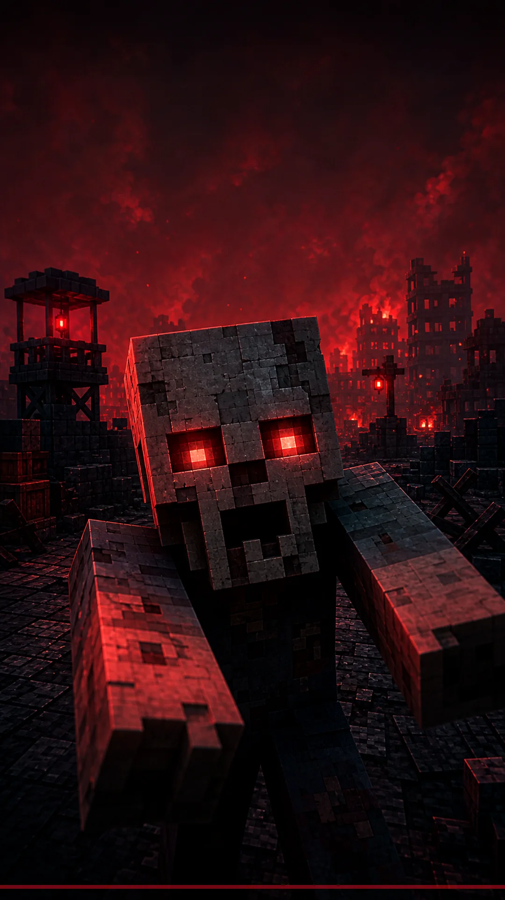
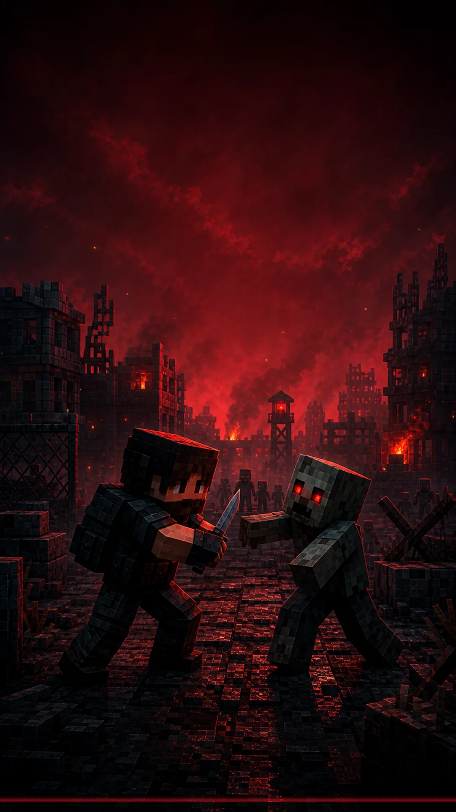
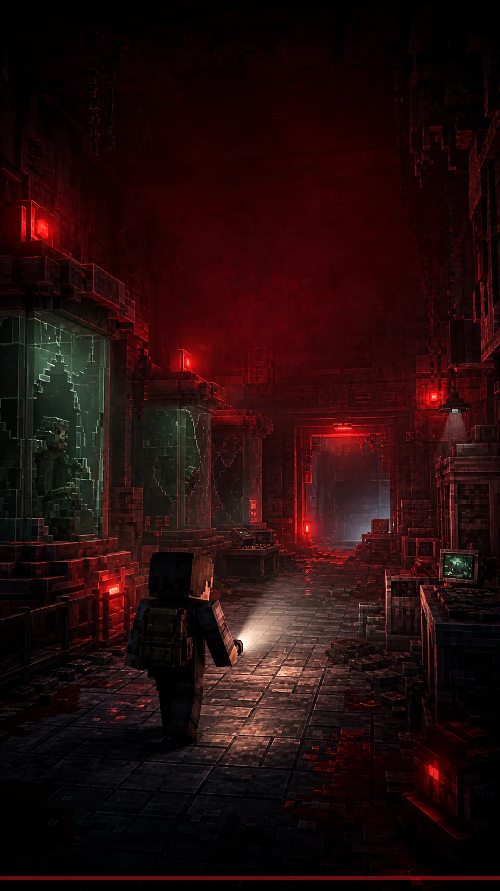
СКРИНШОТЫ СЕРВЕРА
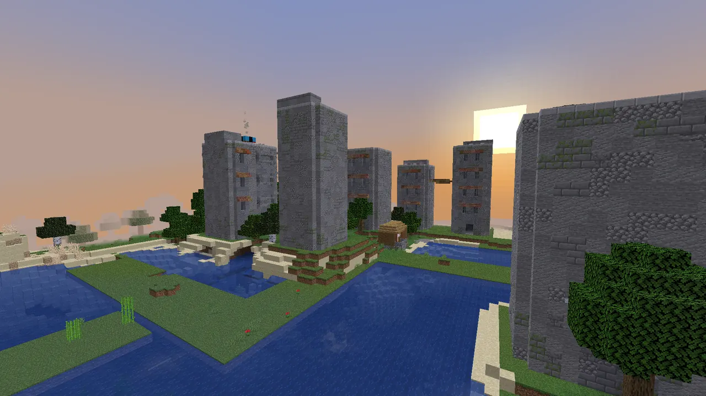
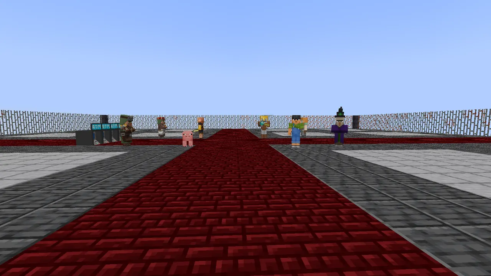
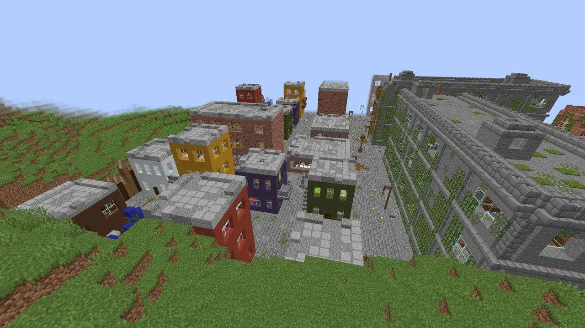
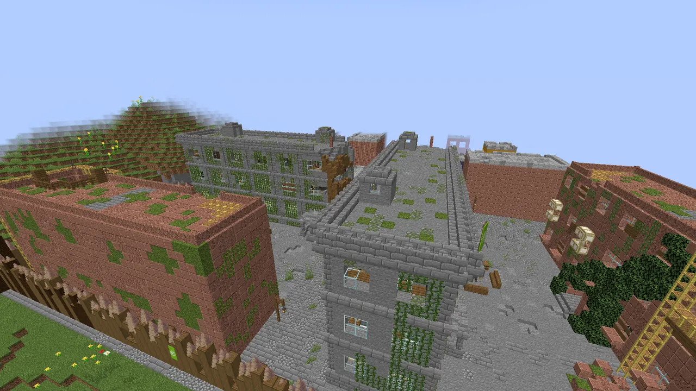
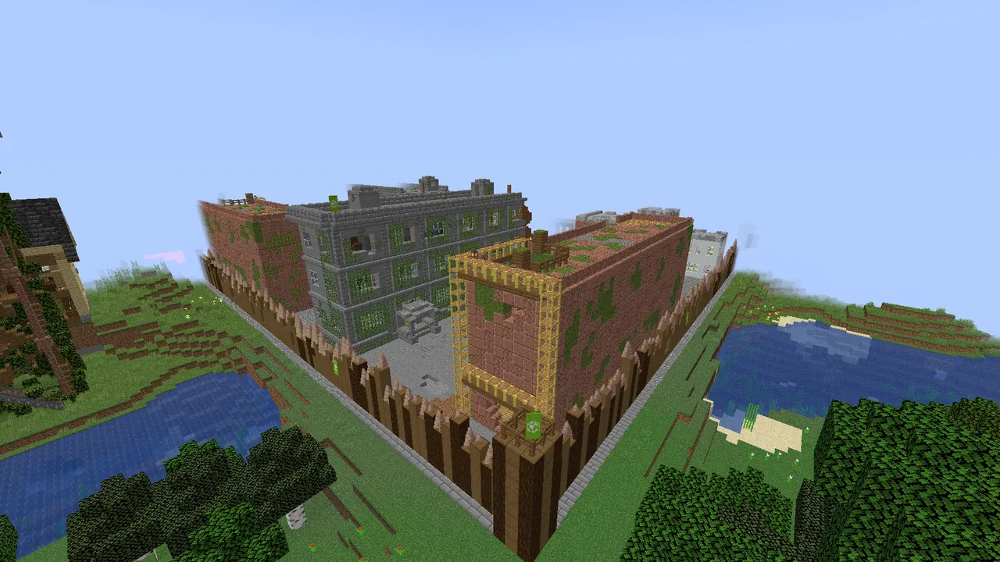
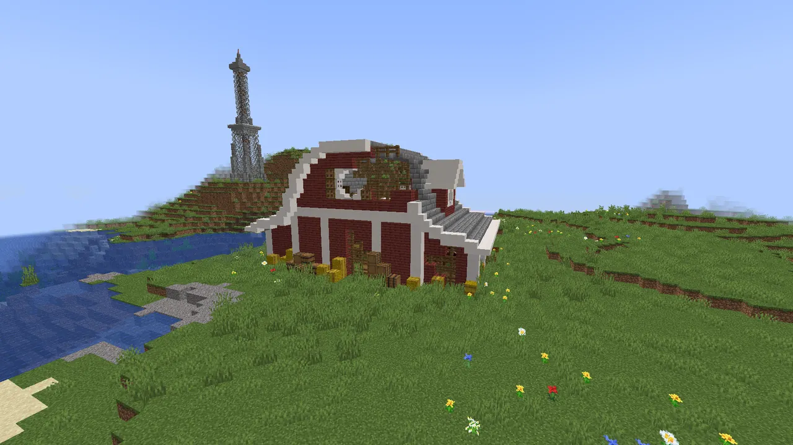
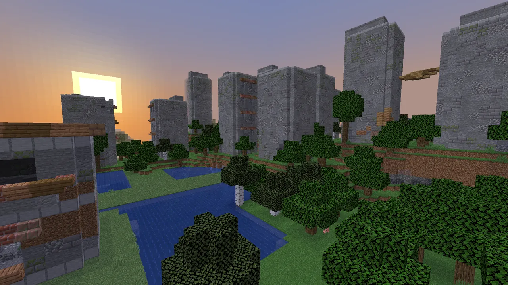
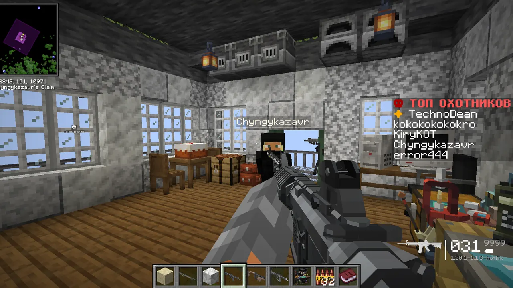
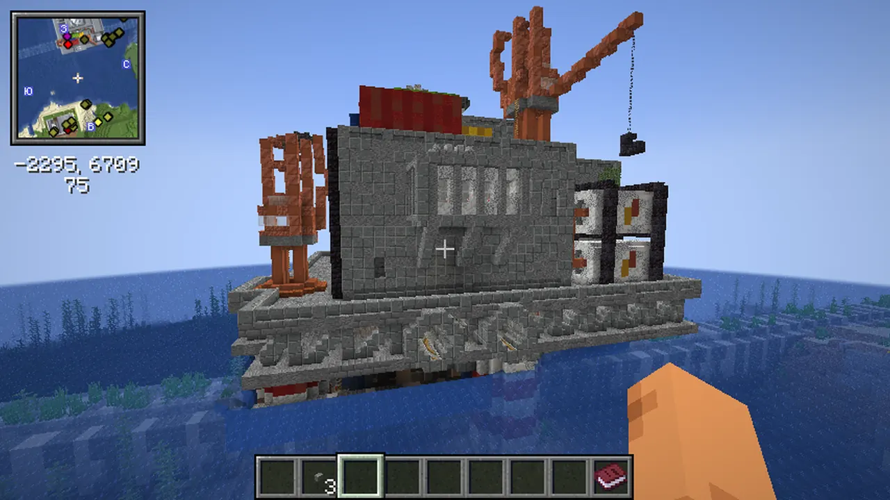
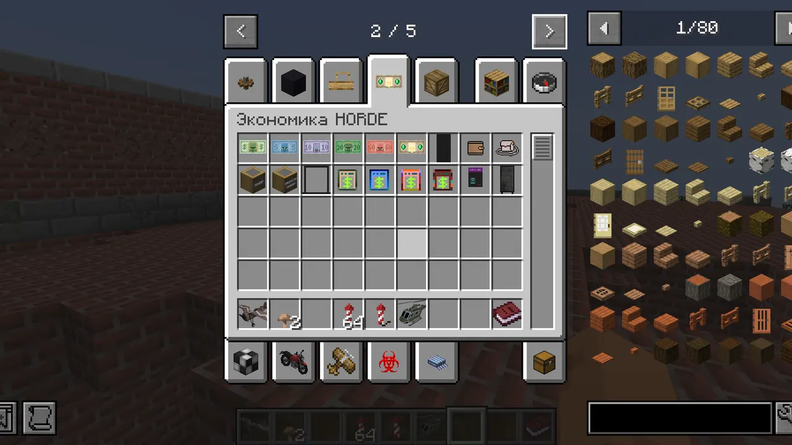
ПЕРВЫЙ ЗАПУСК
Один EXE для Windows. Java, Forge и моды отдельно устанавливать не нужно.
Выберите PNG-скин при желании и запустите игру без лицензии или через официальный аккаунт.
Используйте /register пароль пароль. При следующих входах — /login пароль.
ЧАСТЫЕ ВОПРОСЫ
HORDE — русский сервер выживания Minecraft с модами про зомби-апокалипсис. Игроки исследуют разрушенные города, добывают оружие, строят базы и переживают атаки орды.
Сервер работает на Minecraft Java Edition 1.20.1 с Forge и предназначен для компьютеров Windows.
Скачайте HORDE.exe с официального сайта проекта. Лаунчер сам установит Minecraft 1.20.1, Forge, моды и русские ресурсы, а затем будет получать обновления автоматически.
Да, доступ к серверу HORDE и загрузка фирменного лаунчера бесплатны.
Нет. HORDE использует Minecraft Java Edition, Forge и моды, поэтому для игры нужен компьютер под управлением Windows.
ГОТОВЫ ВЫЖИВАТЬ?
Фирменный лаунчер установит Minecraft 1.20.1, Forge, серверную сборку модов и русские ресурсы. Следующие обновления придут автоматически без повторного скачивания EXE.